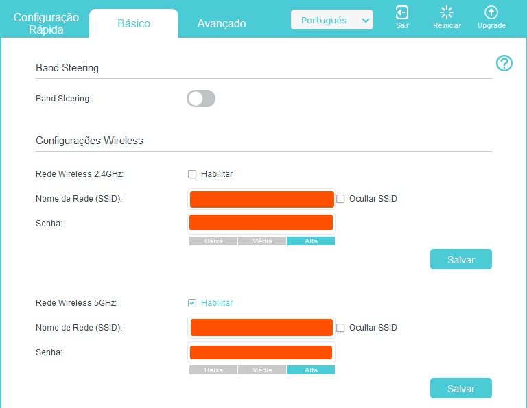
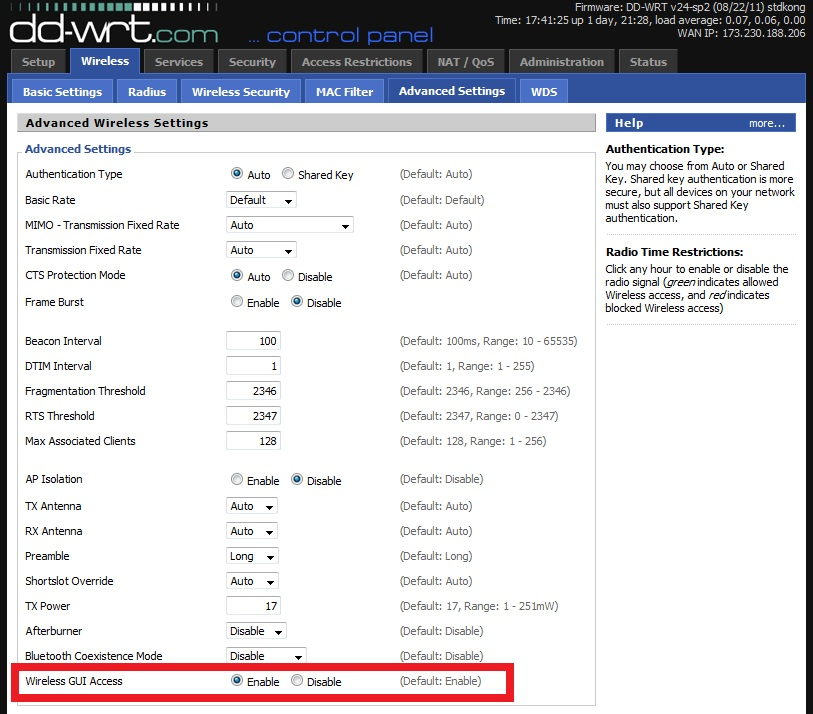
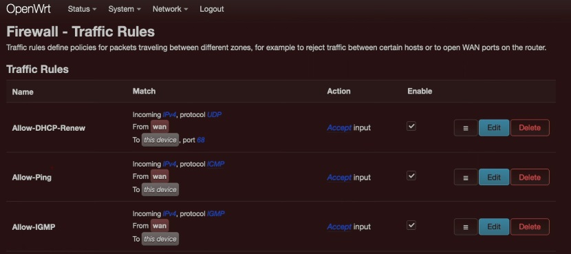

Introdução - Por que razão mudar o firmware do roteador?
Talvez para você não seja tão óbvio, mas quando você paga o seu roteador parte do custo é ligado ao desenvolvimento do firmware, roteadores mais caros costumam vir com firmwares melhores e mais versáteis... Mas... O que talvez você não saiba é que muitas limitações do seu aparelho são ditadas única e exclusivamente pelo fato do fabricante não querer se incomodar com te possibilitar isso, e em alguns casos mais sérios, é possível encontrar roteadores que são idênticos em nível de hardware, mas um é vendido 2x o preço do outro devido única e exclusivamenta ao firmware! (que eu não vou citar aqui para não ser processado, mas não vai ser difícil de você encontrar na internet)
E o que eu posso ganhar com isso?
Bom, eliminar restrições incorporadas ao firmware padrão, obter recursos avançados para tornar sua Internet e rede doméstica mais controláveis e versáteis, aumenta significativamente as capacidades do seu roteador atual em quase todos os aspectos. Desde fornecer suporte superior para VPN's até mesmo eliminando várias vulnerabilidades antigas que muitos roteadores ainda possuem. (e pra você que é esperto, sim eu basicamente copiei isso da página do DD-WRT e joguei aqui, me julgue!)
É importante dizer, que diferente de um rom custom de smartphone que tem 1001 peculiaridades, os firmwares modificados dos roteadores basicamente operam idênticos ao firmware original só que melhor (raríssimas exceções), se você tem um roteador suportado e que já não tem mais o suporte do fabricante, eu verdadeiramente não consigo visualizar um motivo para não fazer essa alteração, pois novamente, não é como se você estivesse mudando de uma custom rom da Asus baseado em tecnologias fechadas da Asus para um outro Kernel todo modificado feito por um terceiro, está mais para mudar de uma interface lixo para uma interface completa, mudar de um firmware baseado em Linux 2.8 para um baseado em Linux 5.15 e de um driver Atheros feito com reboco e caco de telha para um driver otimizado para o dispositivo. É nesse nível!
Ainda não se convenceu? (o que eu duvido muito), então acho que é melhor mostrar a diferença, você pode ir disso:
Para isso:
Ah! E que tal ter um firewall completo já configurado na sua rede e sem a necessidade de um novo equipamento?
(eu assumo que já fui convencido quando me citaram "temas customizados para a interface"... Me julgue!)
ALERTA! Este não tende a ser um procedimento difícil e nem arriscado quando feito corretamente, mas certamente é um procedimento sensível que vai levar a perda do equipamento se você fizer de qualquer jeito! Na dúvida, se você não é da área peça a um amigo que é da área ou um técnico para fazer para você!
Obviamente eu não posso me responsabilizar por nada que vc faça e pela perda do seu equipamento, MAS, eu já fiz isso diversas vezes e com uma boa documentação é bem difícil de se perder algum equipamento, eu mesmo nunca perdi um. Outra coisa é que o procedimento vai variar conforme o fabricante, conforme a versão do hardware, conforme a versão do firmware instalado... Enfim, o que eu vou fazer aqui é pincelar alguns desses firmwares para que você saiba por onde começar.
Quem Não deve fazer esse procedimento?
Obviamente não faça isso em um equipamento que não é seu (como por exemplo, equipamentos do seu provedor de internet), não faça isso caso não tenha nenhum outro roteador e não faça isso se você não tem a paciência para configurar o aparelho ou conhece alguém que possa configurar o roteador para você. Se você tem um roteador velho e já sem suporte jogado pela casa este é o caso ideal de uso.
Opção 1 - OpenWRT
O Projeto OpenWrt é um sistema operacional Linux voltado para dispositivos embarcados. Em vez de tentar criar um firmware único e estático, o OpenWrt fornece um sistema de arquivos totalmente gravável com gerenciamento de pacotes. Isso libera você da seleção e configuração de aplicativos fornecidas pelo fornecedor e permite personalizar o dispositivo por meio do uso de pacotes adequados a qualquer aplicação. Para desenvolvedores, OpenWrt é a estrutura para construir um aplicativo sem a necessidade de construir um firmware completo em torno dele; para os usuários, isso significa a capacidade de personalização total, para usar o dispositivo de maneiras nunca imaginadas.
Esta é provavelmente a alternativa de firmware mais conhecida e que mais deve ter modelos de equipamentos suportados, é a minha primeira escolha, sempre que possível eu instalo esse firmware, o gerencimanto por ele é simples e funcional, e funcionamento do firewall integrado me agrada bastante e serve para a esmagadora maioria dos casos (setar zonas, bloquear acesso administrativo e etc.). Se você tem um roteador mais antigo com uma memória limitada (4MB FLASH / 32MB RAM, 19.07.10 foi a data da última compilação oficial para dispositivos 4/32.), provavelmente não vai ter suporte para uma versão recente do OpenWRT, mas certamente a versão suportada vai ser muito superior a última versão do firmware disponibilizado pelo fabricante.
Para verificar se seu modelo tem suporte e o processo de instalação basta procurar pelo modelo do seu equipamento no link abaixo
OpenWRTOpção 2 - DD-WRT
DD-WRT é um firmware OpenSource alternativo baseado em Linux, adequado para uma grande variedade de roteadores WLAN e sistemas embarcados. A ênfase principal está em fornecer o manuseio mais fácil possível e, ao mesmo tempo, suportar um grande número de funcionalidades dentro da respectiva plataforma de hardware utilizada.
Quando não encontro alternativa de firmware com base em OpenWRT (o que costuma ser o caso com equipamentos baseados em Broadcom) certamente tem alguma coisa baseada em DD-WRT, eu até acho que a interface dele é mais convidativa pro meu tipo de uso (fora em termos de firewall), a documentação tende a ser bastante completa também embora a do OpenWRT é certamente mais precisa.
Para verificar se seu modelo tem suporte e o processo de instalação basta procurar pelo modelo do seu equipamento no link abaixo
DD-WRTOpção 3 - Merlin
Asuswrt-Merlin é um firmware alternativo de terceiros para roteadores Asus, com ênfase especial em ajustes e correções, em vez de mudanças radicais ou coleta de tantos recursos quanto possível.

Então você desenbolçou rios de dinheiro em um roteador Asus que hoje em dia está utilizando um firmware de 2017? O Merlin é a alternativa excelente pra você.
Para verificar se seu modelo tem suporte e o processo de instalação basta procurar pelo modelo do seu equipamento no link abaixo
MerlinOpção 3B - Xwrt-Vortex

Xwrt-Vortex é um port do Asuswrt-Merlin para diversos roteadores desenvolvido pela Vortex
Este aqui é controverso mas pelo menos merece uma menção honrosa, é um port do Asus-Merlin para alguns roteadores NÃO Asus! Uma violação de licença? Com certeza! Feito por um russo aleatório que pra se proteger não divulga todo o código? Com certeza! Mas muito bem avaliado por quem já utilizou.
Para verificar se seu modelo tem suporte e o processo de instalação basta procurar pelo modelo do seu equipamento no link abaixo
Xwrt-VortexOpção 4 - FreshTomato

FreshTomato é um projeto de firmware baseado em Linux, para roteadores domésticos e SOHO. FreshTomato é distribuído com licença GPL.
FreshTomato oferece suporte a sistemas baseados em chipsets Broadcom. Possui uma interface amigável, considerada fácil de usar mesmo por usuários inexperientes.
O Tomato foi originalmente escrito por Jonathan Zarate e foi desenvolvido ao longo do tempo pela comunidade de código aberto. FreshTomato é atualmente o fork mais atualizado do Tomato e tem cerca de 4 a 5 lançamentos por ano.
Por muitos anos essa foi A referência em termos de software alternativo para roteadores, hoje em dia não utilizo em nenhum equipamento mas certamente vale a tentativa para quem possui um aparelho compatível.
Para verificar se seu modelo tem suporte e o processo de instalação basta procurar pelo modelo do seu equipamento no link abaixo
FreshTomatoE isso é tudo?
Não! Existem softwares como o Gargoyle e AdvancedTomato e até o pfSense como alternativas, mas ao menos na minha experiência os dois primeiros eram bem menos intuitivos do que os citados acima e no caso do pfSense, a menos que você tenha algo da Netgear é melhor pular logo pra uma appliance x86 com Intel NIC.
E como instalar?
Como citei acima, não existe um padrão para instalação pois o processo muda conforme fabricante, versão do hardware, versão do software... MAS, via de regra a instalação é feita por TFTP.
O Trivial File Transfer Protocol (TFTP) é um protocolo simples de transferência de arquivos que permite a um cliente obter ou colocar um arquivo em um host remoto. Um de seus principais usos é nos estágios iniciais de inicialização de nós a partir de uma rede local.
Se você tiver no Linux você pode utilizar o comando tftp, no Windows pode habilitar o cliente de TFTP ou mesmo pode utilizar uma ferramenta como TFTPD32 para realizar o procedimento.
Exemplo de instalação de um firmware custom
Eu não sei onde vocês moram, mas aqui na minha região é bem comum a utilização de roteadores TP-LINk WR840N, para fins de exemplo vamos supor que eu queira instalar o OpenWRT em um desses.
Os roteadores da TP-LINK geralmente tem um sistema de recuperação por TFTP que é ativado quanto você liga o roteador segurando o botão RESET. Então, o que faremos?
A primeira coisa é acessar a página do OpenWRT e verificar a última versão disponível para o WR840N V4 (sim, lembre-se de confirmar o modelo de hardware), que na edição dessa página é a versão 23.05.0, então a primeira coisa é baixar o firmware que desejamos gravar.
Os roteadores da TP-LINk geralmente esperam um nome específico de arquivo para começar o processo de recuperação por TFTP, no caso desse modelo o nome correto de arquivo é tp_recovery.bin.
Agora precisamos de um servidor válido para o TFTP, baixe o tftpd64.xxx.zip e mude o IP da sua interface de rede para 192.168.0.66.
Extraia o tftpd e mova o arquivo de firmware para a pasta do tftpd, conecte o cabo de rede no roteador (ainda desligado), ligue o roteador segurando o botão RESET, se tudo der certo você vai perceber a transferência na janela de log do tftpd32 e as luzes do roteador piscando. APENAS ESPERE O PROCEDIMENTO FINALIZAR! Pressa aqui vai matar o seu roteador.
Assim que as luzes de operação voltarem a normalidade tente acessar o IP da WebUI 192.168.1.1 no seu navegador.